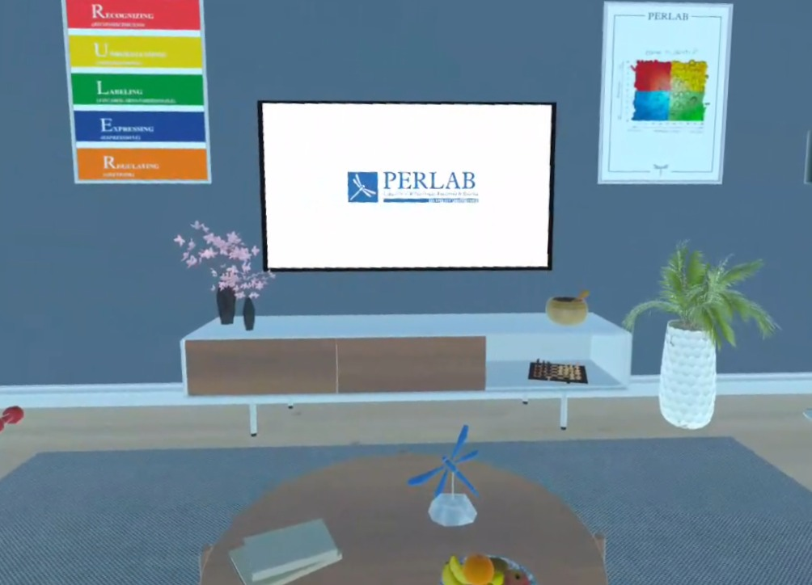

Progetto in realtà virtuale con scopo terapeutico.
Il progetto punta a coinvolgere il paziente in un ambiente rilassante in cui può interagire e visualizzare contenuti sulla gestione delle emozioni, o immergersi in ambienti virtuali.